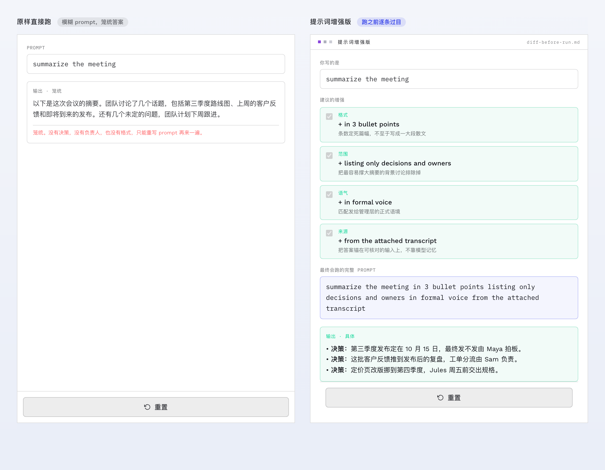
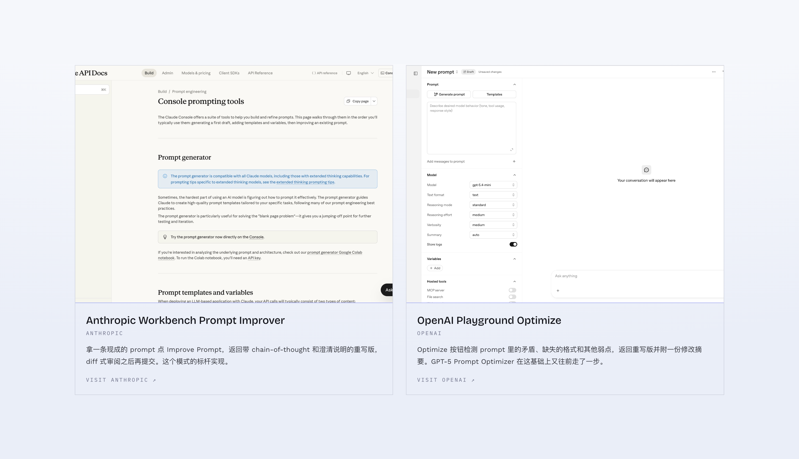
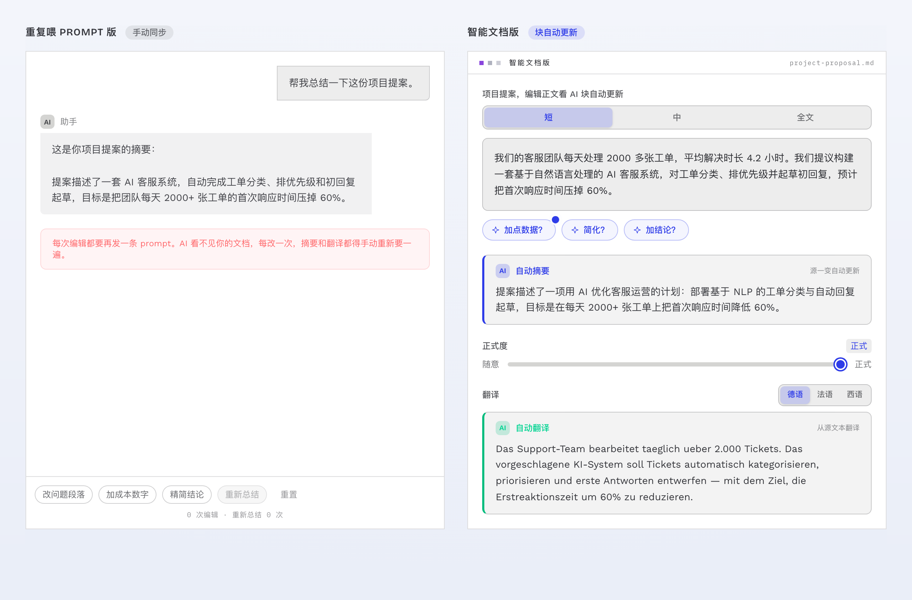
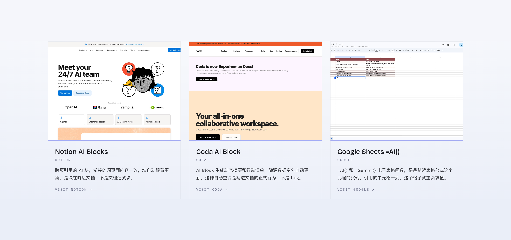
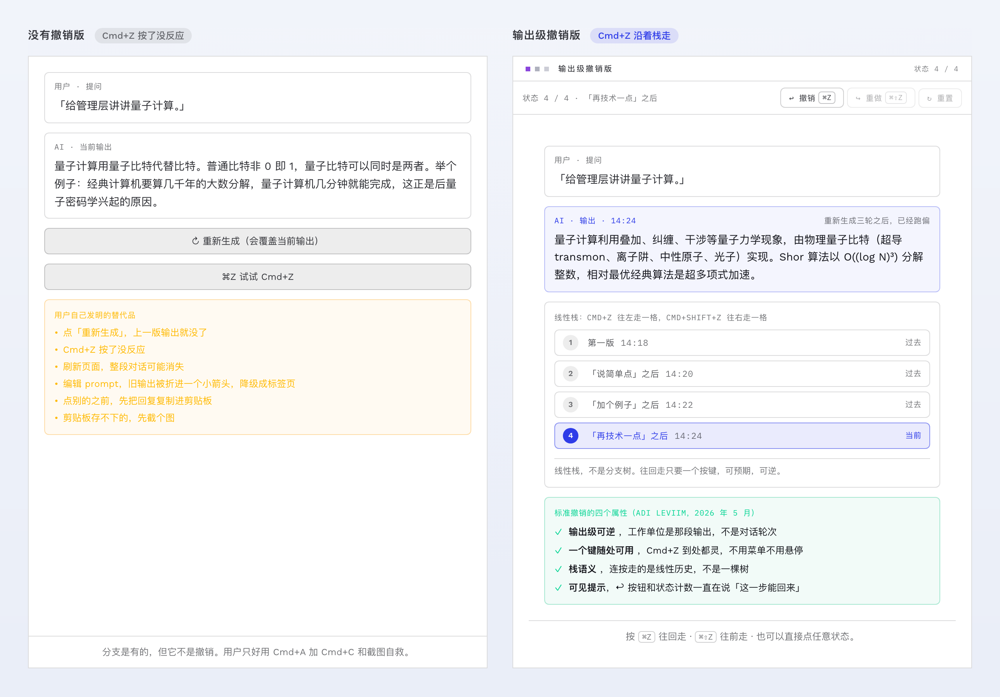
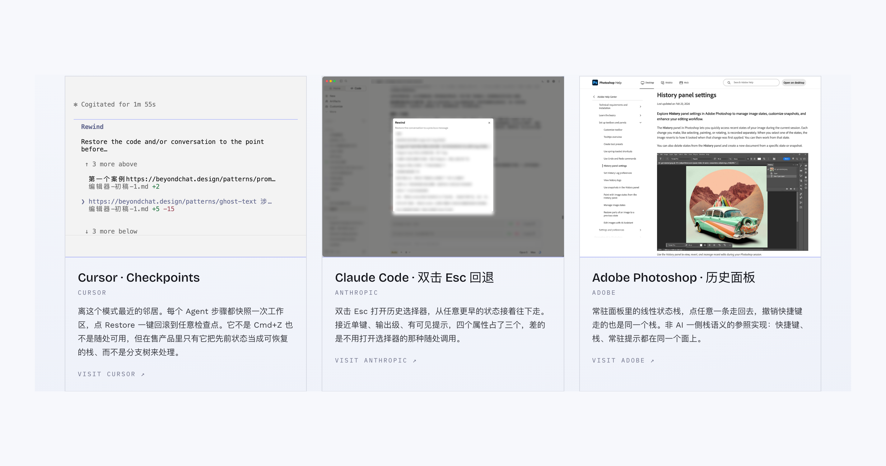

用 AI 写作的场景中，用户的高频行为是：删一句、改个语气、换个词、退回上一版，这类操作本质上都是指着某段具体内容做的修改。现在的 AI 工具已经内置文档编辑器，但大部分用户还是来回在聊天框内用 prompt 形式来修改。
如果不用先描述一遍呢？在要改的那句话上面直接改，改完就生效。
把 prompt 的改写显示成 diff
模糊的 prompt 得到笼统的答案，大多数用户并不知道怎么写好 prompt，比如只会写：生成会议总结，那么生成的就是通用答案。
要想生成更符合用户预期的答案，那就帮用户管理预期。在 prompt 这个环节帮用户改写 prompt，添加结构、范围和约束 ，并将重写后的prompt以差异的形式显示出来，用户可以在发送前接受、编辑或拒绝每一项修改，每一步都是用户的自主选择没有任何幕后操作。比如原始输入只有一句 "生成会议总结"，AI 系统自动拆出四个相关标签分类：格式、范围、语气和来源。四条拼起来的完整 prompt 实时显示在下面，在还没有消耗 token 之前，先提高 prompt 的完整度、提升生成准确率。

这个做法也是 Nielsen 那条"识别优于回忆"的延伸，别让用户去猜界面本可以直接摆出来的改动。这种做法目前使用在开发者调试台上：Anthropic Workbench 的 Prompt Improver 返回带 chain-of-thought 的重写版，diff 式审阅之后再提交；OpenAI Playground 的 Optimize 检测 prompt 里的矛盾和缺失的格式，GPT-5 Prompt Optimizer 在这基础上又往前走了一步。消费级产品那一侧还很少见。

风险是重写的维度需要把控，太激进会改掉用户的原意，大幅度改写可能会改变原 prompt 的含义；另外，如果用户对识别出来的四条全接受，那与产品系统偷偷加进去也就没什么差别了。
把 AI 输出当做派生块
AI 写作文档类还有一个更隐蔽的问题：内容源改了之后，从它派生出来的内容不会跟着变。比如：已经生成了一段摘要，接着又改了正文，摘要就已经不成立了，但你不知道这个问题。
针对这个问题有个做法是：把 AI 输出当成绑定在源内容上的派生块。源文本一改，AI 派生块就跟着重新生成一遍，不用人再手动去同步。这个原理最早出现在 1979 年的 VisiCalc 上，改一个单元格，引用它的格子自动跟着重新求值。比如一份项目提案，源文本块写的这段文字，一旦调整了长度三档、正式度滑块、德法西三种目标语言这些参数，下面的自动摘要和自动翻译就是 AI 派生块，就跟随着源内容自动重新生成。

Notion 的 AI Blocks 做跨页引用，源页面改了块自动更新；Coda 的 AI Block 生成动态摘要，随源数据变化；最贴近表格公式这个比喻的是 Google Sheets 的 =AI() 函数。风险也正落在"自动"这两个字上，文本在用户没看着的时候自己重写，这种体验挺难接受的，除非每次重算都给出可见提示；签署过的摘要、审计材料这类必须是固定快照的输出不适合上这个模式。

给生成的版本一键回退
要想保留修改版本、可以随时回退，AI 产品的通用做法是是重新生成、开分支、编辑之后 fork，我在 Claude 里就是这么维护文档的；这个方式是程序员维护代码的任务习惯演变而来，现在套在面向大众用户的 AI 产品上，应该是提供给专家用户的，对于普通用户或者新手用户，门槛非常高。
而大部分用户会选择更简单的方式：另存一份，或者截图保存。那么这就是另一层人工补救措施，不够 AI-native。这种问题的解决方式可以采取“历史版本时间线”，在对话页就自动展示给用户、并可以一键回退。比如原始提问后、改了三轮，输出变成了一个线性栈，四个版本各带时间戳：第一版 14:18，"说简单点"之后 14:20，"加个例子"之后 14:22，"再技术一点"之后 14:24，Cmd+Z 往左走一格，也可以点任意一个状态跳过去。这里为什么是 Cmd+Z ，等会儿会讲到历史原因。

这个模式目前最类似的三个产品，都是专业基本的产品。Cursor 工作区输入框双击 Esc 就显示历史版本Checkpoints ，点 Restore 就一键回滚；Claude Code 也是一样的快捷键双击 Esc 打开一个历史选择器，点击后可以重新回到对话起点；Photoshop 的历史面板是非 AI 时代的典型案例，常驻面板里的就有线性栈且Cmd+Z。从这几个案例可以看出，本质上的差别在于，AI 产品用户体验还是程序员使用习惯和逻辑主导，还没到传统软件的用户消费级的使用习惯。

这个 AI 产品的回滚快捷键：双击 Esc，可以追溯到软件时代的 Cmd+Z，这个按键在软件史上被论证过三轮。1987 年 Apple 把 Undo 写进人机界面指南，位置固定在 Edit 菜单第一项，快捷键 Cmd+Z，背后的设计原则是宽容（forgiveness）：操作随时能撤回，用户才敢放心去试没用过的功能。1988 年 Norman 在《设计心理学》里说出错是人的常态，设计的责任是把操作做成可逆的，让用户能从错误里退回来，而不用防着用户出错。1994 年它进了 Nielsen 的十条可用性启发式，就是"用户的控制与自由（User Control and Freedom）"那一条：用户经常会误触发一个操作，界面要给一个标记清楚的出口，撤销和重做就是这个出口。之后每一个消费级应用都默认这个操作是基本功能。
这三个 AI 设计模式主要围绕写作编辑场景的修改这条线，验收标准可以更加具体：改 prompt 之前，用户能看到 diff 并逐条决定要不要；源内容变了，派生出来的内容跟着变，而且每次重新生成都要提示；生成历史版本的管理，一个键就能退回上一版，不用开分支也不用手动保存。这三条都做到，修改这个最高频的动作才算真正离开了聊天框，回到被改的内容本身上。
本文三个模式的内容、原型描述与产品案例来自 Beyond Chat 站点的 Prompt Enhancer、Smart Document、Output-Level Undo 三个模式页。